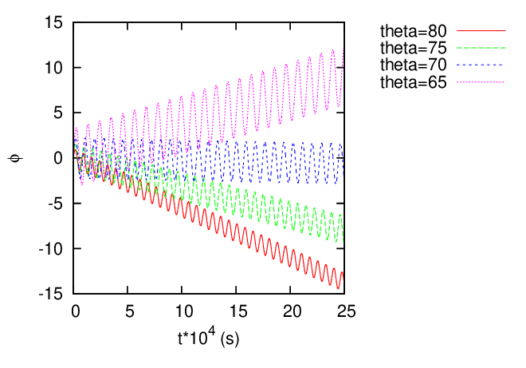
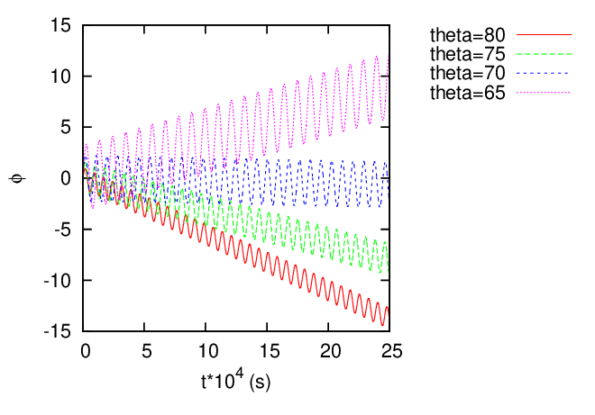

Figure 24: Left: projection of guiding center orbits of trapped particles on (R,Z) plane. Right:
Toroidal motion of guiding center of the trapped particles. All particles have the same kinetic
energy ùúÄ = 10keV and are launched from the low-Ô¨Åeld side midplane of the reference magnetic
surface (R = 2.1,Z = 0). The equilibrium is a Solovev equilibrium with R0 = 1.9m,B0 =
2.0Tesla, κ0 = 1.5, Ze0 = 1.5, g = 3.8mT.